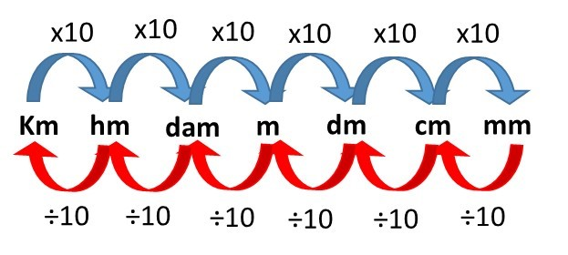

Tutorial de Conversão de Medidas

- Compreenda os sistemas de medição: Conheça os diferentes sistemas, como o SI e o Imperial.
- Identifique as unidades de medida inicial e desejada: Saiba qual unidade você tem e para qual deseja converter.
- Pesquise as relações de conversão: Encontre as relações entre as unidades de medida.
- Use fatores de conversão: Multiplique ou divida a medida inicial por um fator apropriado.
- Realize os cálculos necessários: Faça operações básicas mantendo a precisão.
- Utilize ferramentas de conversão online: Recorra a aplicativos ou sites para facilitar o processo.
- Verifique suas conversões: Certifique-se de que os resultados estão corretos.
- Pratique a conversão: Quanto mais praticar, mais familiarizado ficará com os cálculos e as relações de conversão.
Sempre verifique a precisão, especialmente em contextos técnicos ou científicos, e consulte fontes confiáveis para informações específicas de conversão.